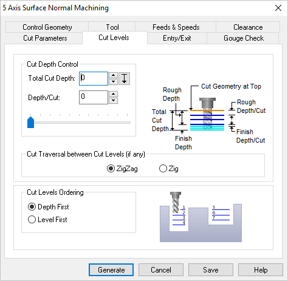

The following Cut Levels tab allow you to specify multiple passes which can be used as roughing operation. It allows you to define the location of the Cut Depth Control and Cut Traversal parameters. Refer to each of the sections below for more information.
 Dialog Box: Cut Levels tab, 5 Axis Surface Normal Operations |
The Cut Depth Control enables you to define the depth of the cut. Total Cut Depth Depth/Cut The Depth/Cut can then be set by entering the desired value or by using the slider bar provided. |
This allows you to choose between Zig or Zigzag. Zig Selecting Zig the cutter traverses the cuts in a single direction between levels. ZigZag Selecting Zigzag the cutter traverses back and from along the cuts between cut levels. |
This section allows you to order the cut regions. The order of cutting can either be specified as Level First or Depth First. Level First  Level First Depth First  Depth First |